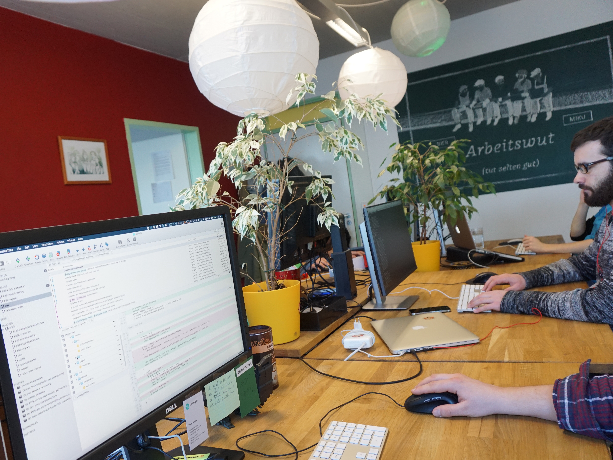
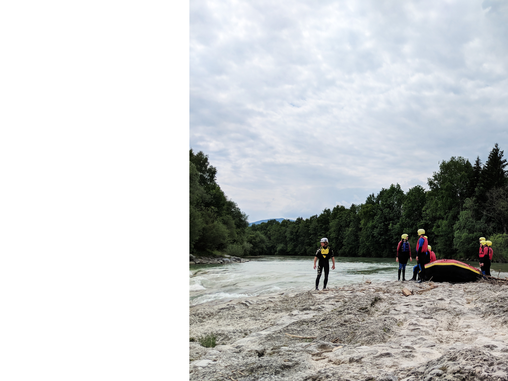

layout: true class: slides-centered --- layout: true class: theme-whiskey, slides-left --- name: cover ## <span style="line-height: 1rem">Arbeit ganzheitlich denken</span><br style="height: 0"><span style="font-size: 1.45rem;margin-top: 0">Praxiserfahrungen aus dem Unternehmen Peerigon</span> <br> <br> <br> <br> <br> <br> Stephan Batteiger<br> stephan.batteiger@peerigon.com<br> +49 821 9078086-1 <img id="slide-cover-img" src="./assets/peerigon-logo.png" width="400"> --- class: slides-chapter, theme-whiskey <div style="font-size: 2.3rem"> <span>Eine andere Welt ist möglich</span><br> <span>Um outro mundo é possível</span><br> <span>Another World Is Possible</span> </div> --- class: slides-chapter, theme-whiskey ## Agenda <ul> <li>Alltägliche Probleme in Unternehmen</li> <li>Die gute Basis</li> <li>Firmenkultur bei Peerigon</li> <li>Fazit</li> </ul> --- layout: true class: slides-centered, theme-whiskey --- class: slides-chapter, theme-whiskey ## Alltägliche Probleme in Unternehmen --- layout: true class: slides-image-slider, theme-whiskey --- ### Alltägliche Probleme in Unternehmen? - Ängste - Egoismus - Keine Mitbestimmung - Penible Kontrolle - Machtkämpfe - Missgunst - Schuldzuweisungen - Mobbing - Sinnlose Arbeit - Ungerechtigkeit - Unzufriedenheit - ... --- ### Alltägliche Probleme in Unternehmen ⟹ - Demotivation - Mittelmaß - Unproduktivität - Krankheit - Umsatzeinbuße - ... --- class: slides-chapter, theme-whiskey ### Die gute Basis --- layout: true class: slides-image-slider, theme-whiskey --- ### Die gute Basis? - Wertschätzung / ehrliches Lob - Persönliche und Unternehmensziele passen zusammen - Sinnvolle Arbeit - Eigenverantworliches Handeln - Fairness - Offenheit & Feedbackkultur - Mitgestaltungsmöglichkeiten - Sozialer Austausch - Spielraum - Vertrauen - Persönliche Weiterentwicklung - ... --- ### Die gute Basis ⟹ - lebendiges und smartes Team - Zufriedenheit beim Team und Kunden - Mund-zu-Mund-Propaganda - Unternehmenserfolg - ... --- class: slides-chapter, theme-whiskey ### <span style="font-size: 2rem">13 Aspekte</span><br>Unternehmenskultur bei Peerigon --- layout: true class: slides-image-slider, theme-whiskey --- ### Transparenz #### Ursache - Transparenz in allen Bereichen, auch bei den Unternehmenszahlen - Jeder Entscheidungsweg ist online für alle einsichtig - Open Door Policy - Aber auch Schutz des Individiums #### Wirkung - Entscheidungen werden vom Team verstanden, getragen und verbessert. --- ### Flache Hierarchien #### Ursache - Partizipation - Auf Augenhöhe - Die besseren Argumente gewinnen - Voneinander lernen wollen #### Wirkung - Förderung des Mitdenkens und der Kreativität - Wertschätzung --- ### Mitgestaltungsmöglichkeiten #### Ursache - PassionGroups: Leidenschaftlicher Deep-Dive & Konzepte - WeeklyMeeting: Vorstellen Konzepte, Informieren, Feedbackrunden & Beschließen - MonthlyBrunch: Ähnlich WeeklyMeeting, aber auch mal Platz für Diskussionen #### Wirkung - Mehr Diskussion am Anfang, dafür fast keine Diskussion danach - Das Team versteht und trägt die Entscheidung - Identifizierung - Erfüllung - Wertschätzung 👏 --- ### Faire(re) Gehälter #### Ursache - Gleiches Grund-Gehalt für alle (abhänig von Wochenstunden und Skill-Level) - Zuschüsse wie Fahrt- und Reisekosten, Fahrrad, ... - Beteiligung am Unternehmenserfolg #### Wirkung - Eigenes Handeln so ausrichten, dass es allen zugute kommt. - Wertschätzung - Fairness --- ### Gute Arbeitsumgebung #### Ursache - Meeting auch beim Spazieren gehen - Ergonomische Arbeitsplätze - Getränke und Obst kostenfrei, aber nichts ungesundes #### Wirkung - Abwechslung - Gesundheit - Wenig Bürokratie bzgl. Abrechnungen von beispielsweise Kaffee - Fokus auf das Wesentliche --- ### Gute Work-Life-Balance #### Ursache - Sport auf Arbeitszeit - Keine Überstunden / aufeinander achten - Arbeiten von jedem Ort der Welt aus - Arbeiten zu jeder Zeit, wann man möchte - Sabbatical #### Wirkung - Gesundheit - Ausgeglichenheit - Platz um kreativ denken zu können - Vereinbarung privater und unternehmerischer Ziele  --- ### Sinnstiftende Arbeit #### Ursache - Fokus auf sinnstiftende und anspruchsvolle Projekte - Verwirklichung von persönlichen Zielen #### Wirkung - Geringere Burnout-Gefahr - Motivierend - Begeisterung - Erfüllung --- ### Gemeinsame Werte #### Ursache - Gemeinsame Werte und Ansprüche, wie beispielsweise Qualität, Nachhaltigkeit, Datenschutz, Fairness, lernen wollen, ... #### Wirkung - Schnellere und gute Entscheidungen, die vom ganzen Team getragen werden - Identifizierung mit dem Unternehmen und dem Team - Guter Teamspirit --- ### Nachhaltigkeit #### Ursache - Gesellschaftliche Verantwortung übernehmen (Nahrung, Elektornik, Merchandising, Energie, Büro, Transport, Partner) #### Wirkung - Vorbildfunktion - Schnellere Entscheidungen, da weniger Optionen - Identifizierung --- ### Weiterbildungen #### Ursache - Investition in Besuche von Konferenzen, Meetups, ... #### Wirkung - Innovativ bleiben - Team-Building - Neue Aufträge - Kreativität fördern --- ### Diversität #### Ursache - Förderung von Diversität #### Wirkung - Weltoffener - Differenzierter - Kreativer --- ### Soziales #### Ursache - Zusammen sein (Sommerfest, Geburstagsevent, Hüttenausflug, Weihnachtsfeier, Konfernzen, ...) - Gemeinsam an Projekten arbeiten #### Wirkung - Möglichkeit, sich auch mal anders kennen zu lernen - Förderung von Zwischenmenschlichkeit - Freude am Arbeiten  --- ### Unternehmensziele #### Ursache - Team Workshop zur Erarbeitung der Unternehmenszielen #### Wirkung - Mitgestalten des Unternehmens - Kreativität - Besseres Kommitment des Teams - Neuausrichtung des Unternehmens - Zukunftsfähigkeit <img src="assets/company-goals.jpg" class="rightImage"> --- class: slides-chapter, theme-whiskey ### Fazit --- class: slides-chapter, theme-whiskey <div style="font-size: 2.3rem"> <span>Eine andere Welt ist möglich</span><br> <span>Um outro mundo é possível</span><br> <span>Another World Is Possible</span> </div> --- layout: true class: slides-image-slider, theme-whiskey --- ### Erste Schritte --- ### Erste Schritte <span style="color: #e6be00">für Unternehmer 1) Akzeptieren, dass kein Mensch perfekt ist.<br> 2) Verstehen, dass wir gemeinsam kreativer und besser sind.<br> 3) ☐ Möglichkeiten schaffen offenes Feedback zu geben und Ideen einzubringen.<br> 4) Stück für Stück die Ideen weiterentwicklen und umsetzen.<br> --- ### Erste Schritte <span style="color: #e6be00">für Mitarbeiter 1) Akzeptieren, dass kein Mensch perfekt ist.<br> 2) Verstehen, dass wir gemeinsam kreativer und besser sind.<br> 3) ☐ Möglichkeiten schaffen offenes Feedback zu geben und einzubringen.<br> 4) Stück für Stück die Ideen weiterentwicklen und umsetzen.<br> 5) ☐ Den Vorgesetzten bei einem Kaffee begeistern.<br> --- class: slides-chapter, theme-whiskey #### Los geht's:<br>Seid mutig, seid kreativ! Stephan Batteiger<br> stephan.batteiger@peerigon.com<br> +49 821 9078086-1